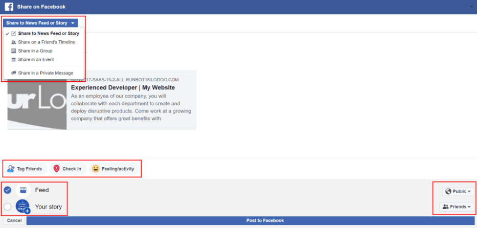
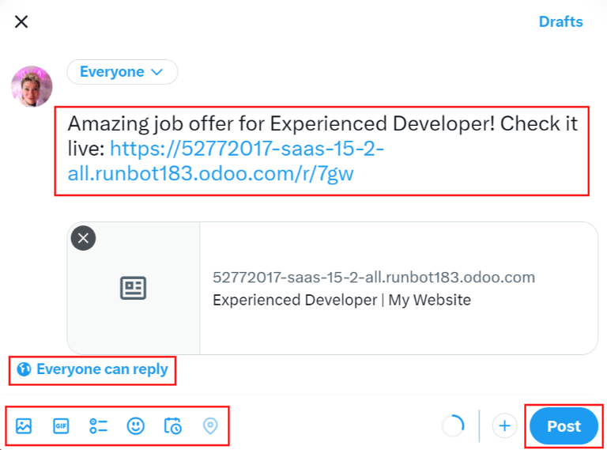
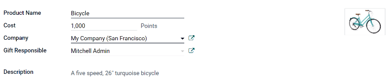
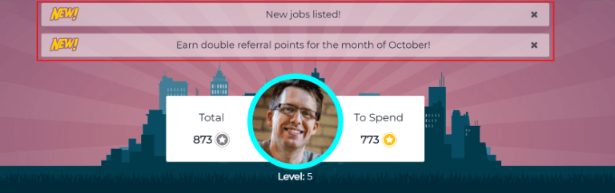

Referrals¶
Odoo’s Referrals application is a centralized place where all information regarding referrals is housed, from points earned, coworkers hired, and rewards selected. Users can recommend people they know for job positions, then earn referral points as those people progress through the recruitment pipeline. Once enough referral points are earned, they can be exchanged for prizes. The Referrals application integrates with the Employees, Recruitment, and Website applications, all of which must be installed in order for the Referrals application to function.
The only configuration needed for the Referrals application after it is installed are the rewards; everything else is pre-configured when Odoo Referrals is installed.
Any user with either Referral User, Officer, or Administrator rights for the Recruitment application has access to the Referrals application. Only user’s with Administrator rights for the Recruitment application have access to the reporting and configurations menus. For more information on users and access rights, refer to these documents: Users and Access rights.
Onboarding¶
When opening the Referrals application for the first time, a pre-configured onboarding script appears. This is in the form of four slides, each explaining the different parts of the Referrals application. At the top of the dashboard, the following message is displayed throughout all the onboarding slides: GATHER YOUR TEAM! Job Referral Program. Behind this main message is an image, and beneath it some more explanatory text.
Each of the onboarding slides has a corresponding image and message that is displayed. After reading each message, click the Next button to advance to the next slide.
The text that appears on each slide is as follows:
Oh no! Villains are lurking the city! Help us recruit a team of superheroes to save the day!
Browse through open job positions, promote them on social media, or refer friends.
Collect points and exchange them for awesome gifts in the shop.
Compete against your colleagues to build the best justice league!
Note
The onboarding slides will appear every time the Referrals application is opened, until all the slides have been viewed and the Start Now button has been clicked. If the onboarding is exited at any point, or if the Start Now button has not been clicked, the onboarding slides will begin again when the Referrals application is opened. Once the Start Now button has been clicked, the onboarding slides will not be seen again, and the main dashboard will load when the Referrals application is opened from that point on.
At any point during onboarding, the Skip button may be clicked. This exits the onboarding, and the main Referrals dashboard loads. If Skip is clicked, onboarding slides will not load anymore when opening the Referrals application.

Note
If there are any candidates hired that the user had referred prior to opening the Referrals app (meaning the onboarding slides have not appeared before), when Start Now is clicked at the end of onboarding, instead of going to the main dashboard, a hired screen appears instead.
Modifying onboarding slides¶
Onboarding slides can be modified if desired. Only users with Administrator rights for the Recruitment application can modify onboarding slides. To edit a slide, navigate to Each line displays the text for the individual onboarding slide. To edit an onboarding slide, click on an individual slide line to open the slide’s onboarding form, then click Edit.
Make any changes to the message in the Text box. To change the order the slide appear in the onboarding, the Sequence can be modified. Type in the corresponding number to indicate the order in which the slides should be displayed. A Company may be selected, however, if this field is populated, that slide will only be displayed for that particular company.
The image can be modified as well. Hover over the image thumbnail in the top right corner of the form. A ✏️ (pencil) icon and 🗑️ (garbage can) icon appear. Click the ✏️ (pencil) icon to change the image. A file navigator window loads. Navigate to the desired image, select it, then click Open. The new image appears in the thumbnail. To delete an image, click the 🗑️ (garbage can) icon, then select a new image using the ✏️ (pencil) icon.
To save any changes, click Save, or click Discard to delete any changes and revert to the original content.

The order of the slides can also be changed directly in the Onboarding dashboard, without having to edit an individual onboarding slide. Click the up and down arrow symbol that appears after the checkbox and before the slide text, and drag the slide to the desired position. The Sequence automatically changes on all the slide’s onboarding forms, reflecting the new sequence.

View Jobs¶
To see all job positions that are actively recruiting candidates, click the View Jobs button on the main Referrals dashboard. This presents all job positions, with each individual job presented in its own card.
Each job position card contains the following information:
The title of the job position. This information is taken from the Job Position field of the job form.
The number of positions being recruited. This information is taken from the Expected New Employees field of the Recruitment tab of the job form.
The points a user will earn when an applicant applies for the position.
The job description detailing the job position. This information is taken from the Job Position tab of the job form.
To see all the details for a job position, click the More Info button on the specific card. This opens the job position webpage in a new browser tab. This is what an applicant sees before applying for a position.
Note
Only published job positions will be visible in the Referrals app. To check which job positions are published or not, refer to the Job positions documentation.
Refer friends¶
To share a job position with someone, click the Refer Friend button on the specific job position card. A pre-configured Send Job Offer by Mail email pop-up window appears. Enter the recipient’s email address in the Email field.
The subject and body are populated using a default template. The subject Job for you appears, and
can be modified if desired.
The specific title of the job position will populate the Job Position placeholder in the
email body. The See Job Offer text in the email body is an individualized tracking link to the
specific job position listed on the website. When the prospective employee receives the email, the
link will send them to the job position page, where they can apply for the position, and the person
who referred them is tracked in the Referrals application.
If desired, add any text or closing salutation to the email body. When all edits have been made, click Send Email to send the email, or click Cancel to close the email pop-up window.

Link¶
To share the job position with a customized tracking link, click the Share Now button with the 🔗 (chain) icon inside it. A Link to Share pop-up window appears with the tracking link. Click Copy to copy the link. After the link is copied, click the Close button to close the pop-up. Next, share the link with the prospective employee however desired.
Facebook¶
To share the job position using Facebook, click the Share Now button with the f (Facebook icon) inside it. If the user is already logged into Facebook, when the f (Facebook icon) is clicked, a Share on Facebook page loads in a new tab, with the link populated in the main body of the new post. If the user is not already logged in, a log-in screen loads instead, prompting the user to log-in to Facebook first.
Type in any additional information to add to the post, in the space directly below your name. If desired, tag users, check-in at a location, or add a status to the post. To tag a user, click the Tag Friends icon and select the people to tag to the post. To add a check-in location, click the Check in icon, and select the location from the pop-up of predetermined locations based on your current location. To add a status, click the Feeling/Activity icon, then select either the feeling or the activity type, and lastly, if an activity type was selected, select the specific activity.
There are five methods to share the job position, Your Story, Share on a Friend’s Timeline, Share in a Group, Share in an Event, and Share in a Private Message. To select the sharing method, click the drop-down menu located at the top of the page, directly beneath the Share on Facebook banner.
The default sharing method is through the News Feed, Story, or both. At the lower portion of the form are radio buttons next to the two options, Feed (for the News Feed) and Your Story for stories. When Share to News Feed or Story is selected, these buttons are active, if another option is selected, these radio buttons are greyed out. Activate the radio button(s) to indicate how the job position should be shared, either in the news feed, the story, or both.
The Share to news feed or story option allows for specific privacy settings to be selected. In the lower right corner of the screen, there are two drop-down menu options, one for the Feed option, the other for the Your story option. Select the posting parameters from the drop-down menus. The Feed ad Your story options appear different from user to user, depending on what privacy settings have been created in Facebook. Public and Friends are default options, but other options that the user may have configured will appear as well, such as custom groups.
When the post and/or story is ready to be shared, click the blue Post to Facebook button at the bottom of the screen.
Instead of making a public post on the user’s on Facebook page, the job position can be shared directly on a friend’s timeline. Click the Share to News Feed or Story drop-down menu near the top of the page, and select Share on a Fried’s Timeline.
When selected, a Friend field appears below the selection. Begin to type in the friend’s name. As the name is typed, a list appears, populated with names that match what is entered. Select the friend from the list. Only one friend can be selected.
When the post is ready to be shared, click the blue Post to Facebook button at the bottom of the screen.
To reach a specific audience and not share the job position publicly with everyone, a job can be shared in a group. Click the Share to News Feed or Story drop-down menu near the top of the page, and select Share in a Group.
When selected, a Group field appears below the selection. The available groups that can be posted to are groups the user is currently a member of. Job positions cannot be shared with groups the user has not joined. Begin to type in the name of the group. As the group name is typed, a list appears, populated with the group names that match what is entered. Select the group from the list. Only one group can be selected.
When the post is ready to be shared, click the blue Post to Facebook button at the bottom of the screen.
A job position can also be shared on an event page. Click the Share to News Feed or Story drop-down menu near the top of the page, and select Share in an Event.
When selected, an Event field appears below the selection. The available events that can be posted to are events the user is invited to. This includes events that the user has not responded to yet, and events that have occurred in the past. Begin to type in the name of the event. As the event name is typed, a list appears, populated with the events that match what is entered. Select the event from the list. Only one event can be selected.
When the post is ready to be shared, click the blue Post to Facebook button at the bottom of the screen.
The last option is to share a job position privately instead of publicly, in a Facebook message. Click the Share to News Feed or Story drop-down menu near the top of the page, and select Share in an Private Message.
When selected, a To field appears below the selection. Begin to type in the friend’s name. As the name is typed, a list appears, populated with names that match what is entered. Select the friend from the list. Multiple friends can be selected and added to a single message. Repeat this process for each friend to be added.
When the message is ready to be sent, click the blue Send message button at the bottom of the screen.
X/Twitter¶
A job position can also be shared on X/Twitter. Click the Share Now button with the bird icon inside it. If the user is already signed in to X/Twitter, when the Share Now icon is clicked, an X/Twitter page loads in a new tab with a pre-populated message ready to post, in a draft pop-up. If the user is not already signed in, a sign-in screen loads instead, prompting the user to sign in to X/Twitter.
The default message is:
Amazing job offer for (Job Position)! Check it live: (link to Job Position)
Type in any additional information or make any edits to the message. If desired, click the X in the top left corner of the thumbnail preview of the webpage to remove it. To adjust the audience for the message, click the drop-down button labeled Everyone. Select the preferred audience from the drop-down menu. The default option is Everyone, and the other options is Circle. The Circle is a group of people that the user has selected in X/Twitter.
The default setting is 🌎 (globe) Everyone can reply, an allows everyone on X/Twitter to reply to the message. To change this, click the 🌎 (globe) Everyone can reply button in the lower left section of the message. There are four options presented: Everyone, Accounts you follow, Verified accounts, and Only accounts you mention. Selecting one of the other options restricts who can reply to the message.
There are various other items that can be added to the message. Media (photos, videos, etc), GIF’s, polls, emojis, and a location may all be added. Click the corresponding icon in the bottom left of the message and follow the prompts to add the desired additional elements.
To have the message posted at a future date and time, click the Schedule icon in the lower left of the message window. It is the fifth icon from the left. Enter the date and time that the message should be posted using the date and time selector presented. Click Confirm to add the scheduled time to the message.
To post the message, click Post. The message will be immediately posted, or, if it was scheduled, will be posted at the scheduled date and time.
LinkedIn¶
To share a job position on LinkedIn, click the Share Now button with the in (LinkedIn logo) inside it. If the user is already logged into LinkedIn, when the Share Now button is clicked, a new tab loads in LinkedIn, with a link to the job position at the top. If the user is not already logged in, a log-in screen loads instead, prompting the user to log-in to LinkedIn first.
The job position can be shared either in a public post, or in a private message to an individual or group of individuals.
Send as private message¶
Instead of making a public post, the post can be sent to a connection in a private message. To do so, click the Send as private message button in the lower left corner. A message window loads with the link to the job description in the bottom of the window. First, select the recipient(s) for the message. Type the name in the Search for message recipients field. As the name is typed in, any matching connections appear. Click on a connection to add them. Repeat this for all the recipients to send the message to. There is no limit on the number of connections that can be messaged. Next, enter any additional text in the message body. Click Send in the lower right corner to send the message. A Message successfully sent! screen loads. Two options are presented, View Message and Continue to LinkedIn. Click on the desired selection to navigate to that choice, or close the browser tab to exit.
Email a friend¶
Another way to share job opportunities is to share the entire current list of open job positions instead of one job position at a time. To do this, navigate to the main Referrals app dashboard. Click the Email a friend button at the bottom of the screen. A Send Job Offer by Mail pop-up window appears.
Enter the email address(es) in the Email line. The email can be sent to multiple
recipients, simply enter a comma followed by a single space after each email address. The
Subject is pre-configured with Job for you, but can be edited.
The email body is also populated with pre-configured text. The text that appears is:
Hello,
There are some amazing job offers in my company! Have a look, they can be interesting for you
See Job Offers
The See Job Offers text is a tracking link to a complete list of all job positions currently being
recruited for, that are live on the company’s website (published). Add any additional text and/or
make any edits to the message body, then click Send Mail to send the email. The message
will be sent and the window will close.
Hired referrals¶
When a candidate that has been referred by a user is hired, the user “grows their superhero team” and adds superhero avatars to their Referrals dashboard.
After a referral has been hired, when the user next opens the Referrals app, instead of the main dashboard, a hired page loads. The text (Referral Name) has been hired! Choose an avatar for your new friend! appears.
Below this message are five avatar thumbnails to choose from. If an avatar has already been assigned to a referral, the thumbnail is greyed out, and the name the avatar has been chosen for appears beneath the avatar. Click on an available avatar to select it.
If more than one referral was hired since opening the Referrals application, after selecting the first avatar, the user is prompted to select another avatar for the subsequent hired referral. Once all avatars have been selected, the dashboard loads and all the avatars are now visible. Mouse over each avatar and their name is displayed above them.
Modify friends¶
Friend avatars are able to be modified in the same manner that levels are modified. Only users with Administrator rights for the Recruitment application can make modifications to friends. The pre-configured friends can be seen and modified by navigating to . Each friend avatar appears in the Dashboard Image column, and the corresponding name appears in the Friend Name column. The default images are a motley group of hero characters, ranging from robots to dogs.
To modify a friend’s dashboard image, thumbnail, name, or position, click on an individual friend to open the referral friend form. Click Edit to make modifications. Type the name in the Friend Name field. The name is solely to differentiate the friends in the configuration menu; the friend’s name is not visible anywhere else in the Referrals application.
The Position can be set to either Front or Back. This determines the position of the friend in relation to the user’s super hero avatar. Click the radio button next to the desired selection, and the friend will appear either in front of or behind the user’s avatar when activated.
If desired, both the thumbnail Image and the Dashboard Image can be modified. Hover over the image being replaced to reveal a ✏️ (pencil) icon and 🗑️ (garbage can) icon. Click the ✏️ (pencil) icon and a file explorer window appears. Navigate to the desired image file then click Open to select it.
Once all changes have been made, click the Save button to save the changes, or click the Discard button to revert to the original information.

Warning
It is not advised to edit the images. An image file must have a transparent background in order for it to render properly. Only users with knowledge about transparent images should attempt adjusting any images in the Referrals application.
Once an image is changed and the friend is saved, it is not possible to revert to the original image. To revert to the original image, the Referrals application must be uninstalled then reinstalled.
Referral points¶
The referral program is based on earning points that are then exchanged for rewards. On the main Referrals application dashboard, the top displays a summary of the user’s current points. The left side of the summary displays the total points earned, and the right side displays the points that are available to spend.
To see the various referrals and the points earned for each, click on one of the buttons directly beneath the avatars. The options are Referrals, Ongoing, and Successful.
The current number of referrals who are still active in the recruitment pipeline, and have not yet been hired or refused, appear above the Ongoing button. The number of referrals who have been hired appear above the Successful button. The total number of referrals (both the ongoing and successful referrals combined) appear above the Referrals button.
Note
To view the referrals associated with each of the categories, Referrals, Ongoing, and Successful, click on the corresponding button. All the referrals for that specific category are displayed.
My referrals¶
To see all the referrals (both ongoing and successful) click the Referrals button. A My Referral window loads. This screen displays all the referrals, with each referral in its own referral card.
A successful referral has a green line down the left side of the card, and displays a ✓ Hired image in the top right corner of the card. Referrals that are in process display an In Progress image in the top right corner.
Each referral card lists the name of the applicant, the department the job position is in, the name of the job position, the person responsible for filling the role (recruiter), and the points earned.
Points¶
The points that can be earned for a referral are the same across all job positions. Each stage of the recruitment process has corresponding points assigned to it. The stages listed correspond to the stages configured in the Recruitment application.
On each individual referral card, beneath the points earned is a bar chart that displays how many points have been earned out of the total possible points that can be earned if the applicant is hired.
Beneath the bar chart is a list of the various recruitment stages and the points earned when the referral moves to that stage. If a stage has been achieved and the points have been earned, a green check mark appears next to the stage.
Example
The pre-configured point structure for referrals is as follows:
Initial Qualification: 1 point
First Interview: 20 points
Second Interview: 9 points
Contract Proposal: 5 points
Contract Signed: 50 points
The total points earned for a referral that is hired is 85 points. Modifications of the points earned for each stage is done in the Recruitment application. Refer to the Recruitment documentation to modify the points for each stage.
Rewards¶
Create rewards¶
The rewards are the only configurations needed when setting up the Referrals application. Only users with Administrator rights for the Recruitment application can create or modify rewards. To add rewards, navigate to . Click Create and a reward form loads. Enter the following information on the form:
Product Name: Enter the name as it should appear for the reward.
Cost: Enter the amount of points required to redeem the reward.
Company: Using the drop-down menu, select the company the reward will appear for. If a reward is to be used for several companies, each company needs to have a record of the reward, with the company listed on the form.
Gift Responsible: Select the person who will be responsible for procuring and delivering the reward to the recipient, using the drop-down menu. This person is alerted when the reward is purchased, so they know when to deliver the reward to the recipient.
Description: Type in the description for the reward. This will be visible on the reward card, beneath the title.
Photo: Add a photo of the reward, which appears on the rewards page. Hover over the image square, and two icons appear, a ✏️ (pencil) and a 🗑️ (garbage can). Click the ✏️ (pencil) icon and a file explorer appears. Navigate to the photo file, then click Open to select it.
The only required fields are the Product Name, Company, and Description.
Important
It is advised to enter a Cost and add a Photo. If a cost is not entered, the default cost will be listed as zero, which would list the reward as free in the reward shop. If a photo is not selected, a placeholder icon will be displayed on the rewards page.
Redeem rewards¶
To redeem points for a reward, click the Rewards button on the main Referrals dashboard. All the configured rewards are listed in individual reward cards. The points required to purchase the reward is listed in the top right corner of the card. If the user has enough points to purchase a reward, a 🧺 (basket) Buy button appears at the bottom of the reward card. If they do not have enough points for a reward, the reward card displays You need another (x) points to buy this instead of a buy button.
Click the 🧺 (basket) Buy button on a reward to purchase it. A confirmation pop-up appears, asking if the user is sure they want to purchase the reward. Click OK to purchase the item, or Cancel to close the window and cancel the purchase.
After OK is clicked, the pop-up window closes, and the points used to purchase the reward are subtracted from the user’s available points. The rewards presented are now updated to reflect the user’s current available points.

Levels¶
The referrals application has pre-configured levels that are reflected in the user’s avatar on the Referrals dashboard. As a user refers potential employees and earns points, they can level up, much like in a video game.
Levels have no functional impact on the performance of the application. They are solely used for the purpose of adding achievement tiers for participants to aim for, gamifying referrals for the user.
The user’s current level is displayed at the top of the main Referrals application dashboard, directly beneath their photo, in a Level: X format. In addition, a colored ring appears around the user’s photo, indicating how many points the user currently has, and how many additional points they need to level up. The cyan colored portion of the ring represents points earned, while the white colored portion represents the points still needed before they can level up.
Modify levels¶
Only users with Administrator rights for the Recruitment application can modify levels. The pre-configured levels can be seen and modified by navigating to . Each avatar appears in the Image column, and the corresponding level number appears in the Level Name column. The default images are of Odoo superheroes, and each level adds an additional element to their avatar, such as capes and shields.
To modify a level’s image, name, or points required to reach the level, click on an individual level in the list to open the level form. Click Edit to make modifications.
Type in the name or number of the level in the Level Name field. What is entered is displayed beneath the user’s photo on the main dashboard when they reach that level. Enter the number of referral points needed to reach that level in the Requirements field. The points needed to level up are the total accumulated points earned over the lifetime of the employee, not additional points from the previous level that must be earned.
If desired, the Image can also be modified. Hover over the image to reveal a ✏️ (pencil) icon and 🗑️ (garbage can) icon. Click the ✏️ (pencil) icon and a file explorer window appears. Navigate to the desired image file then click Open to select it.
Once all changes have been made, click the Save button to save the changes, or click the Discard button to revert to the original information.

Warning
It is not advised to edit the images. An image file must have a transparent background in order for it to render properly. Only users with knowledge about transparent images should attempt adjusting any images in the Referrals application.
Once an image is changed and the level is saved, it is not possible to revert to the original image. To revert to the original image, the Referrals application must be uninstalled then reinstalled.
Level up¶
Once enough points have been accumulated to level up, the circle around the user’s photo is completely filled in with a cyan color, a large image stating Level up! appears above the photo, and the phrase Click to level up! appears beneath the user’s photo and current level.
Click on either the LEVEL UP! graphic, the user’s photo, or the text Click to level up! beneath the user’s photo to level up the user. The user’s avatar changes to the current level, and the ring around the photo is updated to indicate the current amount of points.
Leveling up does not cost the user any points, the user simply needs to earn the specified amount of points required.

Note
Once a user has reached the highest configured level, they will continue to accrue points that can be redeemed for rewards, but they are no longer able to level up. The ring around their photo remains solid cyan.
Alerts¶
In the Referrals application, it is possible to post a message, also referred to as an alert, at the top of the dashboard to share important information with users. These alerts appear as a thin semi-transparent banner, with the word New! appearing on the far left. The text for the alert is in the center of the banner, and on the far right side is an X.
Alerts appear on the main dashboard for the specified time configured on the individual alert. If a user does not wish to see a specific alert again, click the X in the far right side of the alert. This removes the alert from the dashboard and will not appear again, even when opening the Referrals application for the first time in a new session.
Create an alert¶
Only users with Administrator rights for the Recruitment application can create alerts. To add a new alert, navigate to the .
Click Create and a blank alert form loads. Enter the following information on the form:
Date From: The date the alert starts. On this date, the alert will be visible on the dashboard.
Date To: The date the alert ends. After this date, the alert will be hidden from view.
Company: The current company populates this field by default. To modify the company the alert should be displayed for, select the company from the drop-down menu. If this field remains blank, the alert is visible to everyone with access to the Referrals application. If a company is specified, only user’s within that company (who also have access to the Referrals application) will see the alert.
Alert: Enter the text for the alert. This message appears inside the alert banner on the main dashboard.
On Click: There are three options for the alert. Click the radio button next to the desired selection. The options are:
Not Clickable: The alert only displays text, there is no link to click.
Go to All Jobs: The alert contains a link that when clicked, navigates to the website with all the currently posted job positions.
Specify URL: The alert contains a link to a specific URL, that when clicked, navigates to that URL. When selected, a URL field appears below the On Click section. Enter the URL in the field.

Reporting¶
Only users with Administrator rights for the Recruitment application have access to the Reporting feature in Referrals. To access the reports, click . The main view is the Reporting Dashboard view, which contains three sections.
In the top portion of the window, the report displays a bar chart of how many referred candidates are hired, and how many are still in the hiring pipeline. The candidates are further divided by channel, showing specifically where the referral came from, such as a direct referral, Facebook, etc. If a channel does not appear on the report, that indicates there are no referrals from that particular channel.
The middle third provides all the specific data that has been tracked. This includes how many total points have been earned across all referrals, how many applicants were referred, hired, or refused, how many applicants the current logged-in user referred, how many total points were earned, and how many points were given for refused applicants.
The bottom third displays a pivot table. This table can be inserted into a new or existing spreadsheet. To do so, click the Insert in Spreadsheet button right above the chart. A pop-up appears, asking which spreadsheet to insert the pivot chart into. Select the desired spreadsheet from the drop-down menu, or select New Spreadsheet. Click Confirm and the selected spreadsheet loads, with the new table in it.
Note
The spreadsheet is stored in the Documents application. This application needs to be installed in order to use the Insert in Spreadsheet option.